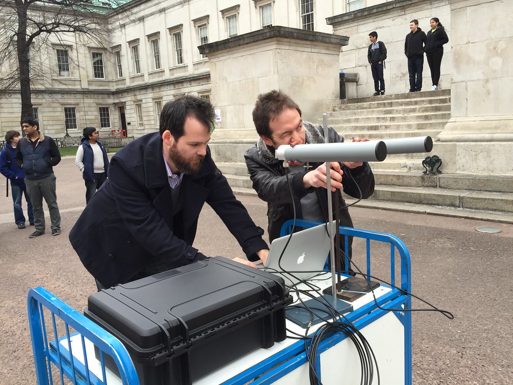

Security & Crime · 23 Nov 2026
Tinubu urges Igboho to work with security agencies to protect South-West

Tinubu tasks Sunday Igboho and his Iru Ekun network to work with the police, army and DSS to boost South-West security ahead of the 2027 elections, says st Read More: https://punchng.com/tinubu-urges-igboho-to-work-with-security-agencies-to-protect-south-west/
Multiple independent publishers are reporting on the same development: Tinubu urges Igboho to work with security agencies to protect South-West.
The available reports place the development in the Security & Crime category. The accounts were compared for agreement on the central event rather than simply shared names or broad topics.
One of the available reports describes the development this way: Tinubu tasks Sunday Igboho and his Iru Ekun network to work with the police, army and DSS to boost South-West security ahead of the 2027 elections, says st Read More: https://punchng.com/tinubu-urges-igboho-to-work-with-security-agencies-to-protect-south-west/
Readers should consult the linked source reports for additional context, updates and details that may change as the story develops.
Sources
This article was produced by the C. O. Eric AI Newsroom from the cited sources. It is published only after automated evidence and safety checks.